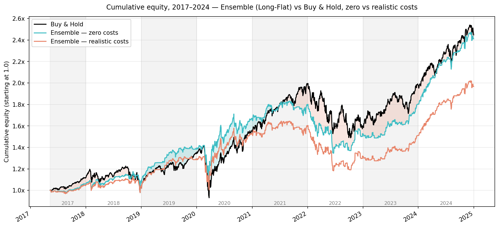

All six models and the soft-voting ensemble were evaluated on an out-of-sample test period spanning May 2017 to December 2024, using a walk-forward validation scheme. Statistical accuracy across individual models ranges from 50.5% to 52.4%, with the ensemble achieving the highest accuracy of 52.8% — figures that are statistically close to a naive random walk baseline. The small gains over the baseline suggest that the features carry limited predictive signal for daily direction on their own.
A consistent pattern across all models is an asymmetry in prediction quality: sensitivity (correctly predicted UP days) persistently exceeds specificity (correctly predicted DOWN days). The models are better at identifying bullish days than bearish ones, which favours the long-flat strategy over long-short. Whether these gains translate into profitable trading is evaluated in the backtest.
Feature importance was computed using SHAP values, normalised per model so that each model's attributions sum to one and are comparable across different models. The rankings show a high degree of consistency: the same handful of features dominate regardless of model family or training window length.
The top five features by SHAP importance are skew_log_change_lag1, svi_ema_slow_std, svi_ema_fast_std, svi_delta_ema_fast, and skew_log_change_ema_slow. The two SKEW features capture the previous day's log change in tail risk and its slow EMA over recent weeks. The three SVI features capture the exponentially weighted standard deviation of search interest levels and the fast EMA of day-over-day changes in search activity.
Across all top features, derived transformations consistently outrank raw level values — how fast sentiment or attention is moving matters more than how high it currently is.
Two strategy variants were tested for each model: long-flat (go long when the model predicts UP, hold cash otherwise) and long-short (go long on UP signals, short on DOWN signals). Each was evaluated under two cost assumptions — zero transaction costs and realistic costs (commission, bid-ask spread, and slippage). The buy-and-hold benchmark holds SPY continuously throughout the test period.
Zero transaction costs
| Model | Strategy | Ann. Return | Sharpe | Max DD |
|---|---|---|---|---|
| Ensemble | Long-Flat | 12.22% | 0.68 | −26.5% |
| Ensemble | Long-Short | 10.48% | 0.49 | −42.0% |
| XGB-252 | Long-Flat | 11.73% | 0.67 | −20.5% |
| XGB-252 | Long-Short | 9.38% | 0.43 | −35.9% |
| Buy & Hold (SPY) | — | 12.44% | 0.58 | −34.1% |
Under zero costs, the Ensemble long-flat strategy nearly matches buy-and-hold in return (12.22% vs 12.44% annualised) while delivering a better Sharpe ratio (0.68 vs 0.58) and a lower maximum drawdown (−26.5% vs −34.1%). Long-short strategies underperform long-flat across all models.
Realistic transaction costs
| Model | Strategy | Ann. Return | Sharpe | Max DD |
|---|---|---|---|---|
| Ensemble | Long-Flat | 9.27% | 0.50 | −28.1% |
| Ensemble | Long-Short | 4.75% | 0.20 | −47.6% |
| XGB-252 | Long-Flat | 8.58% | 0.46 | −20.8% |
| XGB-252 | Long-Short | 3.29% | 0.13 | −42.2% |
| Buy & Hold (SPY) | — | 12.44% | 0.58 | −34.1% |
Adding realistic transaction costs changes the results significantly. The Ensemble long-flat strategy drops to 9.27% annualised (Sharpe 0.50), falling below the buy-and-hold benchmark on both return and risk-adjusted metrics. The maximum drawdown remains lower (−28.1% vs −34.1%). Long-short strategies perform poorly — each position reversal doubles the cost penalty, and the Ensemble reaches only 4.75% annualised.

This project investigated whether machine learning models trained on market sentiment and attention-based data can generate profitable directional trading signals for the SPDR S&P 500 ETF (ticker: SPY). Google Search Volume Index data for twenty financial and economic keywords, the CBOE VIX Index, and the CBOE SKEW Index were used as data sources. From these, 52 predictive features were engineered and used to train six tree-based classification models (Random Forest, XGBoost, and LightGBM, each in two training window configurations), together with a soft-voting ensemble, evaluated using a walk-forward validation scheme. The strategies were profitable in absolute terms, but none were able to outperform the passive buy-and-hold benchmark once realistic transaction costs were included.
Statistical accuracy across individual models ranges from 50.5% to 52.4%, with the ensemble reaching 52.8%, figures close to the random walk baseline. The features carry limited predictive signal for daily direction. The most informative ones come from SKEW and SVI, and derived transformations capturing how fast sentiment or attention is moving consistently outrank raw level values. There is also a consistent asymmetry: the models are better at identifying bullish days than bearish ones, which favours the long-flat strategy over long-short.
Under zero costs, the Ensemble long-flat strategy nearly matches buy-and-hold in return (12.22% vs 12.44% annualised) while delivering a better Sharpe ratio (0.68 vs 0.58) and a lower maximum drawdown (−26.5% vs −34.1%). Once realistic costs are added, the Ensemble drops to 9.27% annualised with a Sharpe of 0.50, falling below the buy-and-hold benchmark. Long-short strategies performed poorly, as each position reversal doubled the cost penalty.